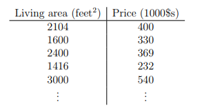
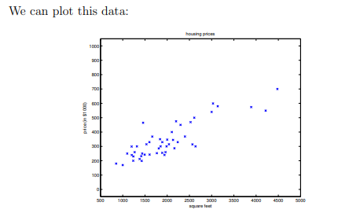
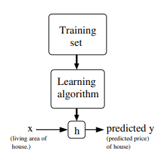
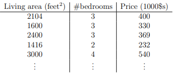

Introduction
let's first discuss what is machine learning ???????????????
In basic terms, ML is the process of training a piece of software, called a model, to make useful predictions or generate content (like text, images, audio, or video) from data.
But if we try to understand the definition of ml by IBM
Machine learning is the subset of artificial intelligence (AI) focused on algorithms that can “learn” the patterns of training data and, subsequently, make accurate inferences about new data. This pattern recognition ability enables machine learning models to make decisions or predictions without explicit, hard-coded instructions.
(An inference is an educated guess or conclusion you reach by combining evidence/clues with what you already know)
This definition says that machine learning a subset of artificial intelligence which focused on developing algorithms(structured steps to solve a problem) i.e. developing structured solution which can understand patterns in training data and use it to make predictions about new data.
If we classify types of machine learning based on "How they learn" i.e. By the Amount and Type of Supervision needed
-
Supervised machine learning
-
Unsupervised machine learning
-
ReInforcement machine learning
-
Semi-Supervised machine learning
In this article, I will break down the mathematics behind linear regression and implement it from scratch using Python, without using libraries like Scikit-learn.
1. Understanding the Problem
First let us talk about supervised learning , dont be scared of the mathematics just spend some time with it and try to study basic maths required for machine learning .

the table above is a dataset that contains house area and price of that house (IN 1000's $) . Let's plot this graph and see the graph

given the dataset , how can we predict house prices of houses who's area is not mentioned in the dataset??
how can we learn to predict the prices of other houses as a function of their area.
lets set some notations that we will use in future
xi -> “input” variables (house area in this example), also called input features
yi -> “output” or target variable that we are trying to predict(price)
A pair (xi,yi) is called a training example, and the datasetthat we’ll be using to learn—a list of n training examples {xi, yi; i =1, . . . , n}—is called a training set.
To describe the supervised learning problem slightly more formally, our goal is, given a training set, to learn a function h : X → Y so that h(x) is a “good” predictor for the corresponding value of y. For historical reasons, this function h is called a hypothesis.
Seen pictorially, the process is therefore like this:

When the target variable that we’re trying to predict is continuous, such as in our housing example, we call the learning problem a regression problem. When y can take on only a small number of discrete values (such as if, given the living area, we wanted to predict if a dwelling is a house or an apartment, say), we call it a classification problem.
2. LINEAR REGRESSION
Linear Regression is a fundamental supervised learning algorithm used to model the relationship between a dependent variable and one or more independent variables. It predicts continuous values by fitting a straight line that best represents the data.
-
It assumes that there is a linear relationship between the input and output
-
Uses a best‑fit line to make predictions
-
Commonly used in forecasting, trend analysis, and predictive modelling
BEST FIT LINE
In linear regression, the best-fit line is the straight line that best represents the relationship between the independent variable (input) and the dependent variable (output). The goal is to minimize the difference between the actual data points and the predicted values generated by the model
linear regression

now to make things more interesting lets add one more input feature to our data set i.e. number of rooms
Here, the x’s are two-dimensional vectors in R2. For instance, x(i)1 is theliving area of the i-th house in the training set, and x(i)2 is its number of bedrooms
(In general, when designing a learning problem, it will be up to
you to decide what features to choose, so if you are out in Portland gathering
housing data, you might also decide to include other features such as whether
each house has a fireplace, the number of bathrooms, and so on. We’ll say
more about feature selection later, but for now let’s take the features as
given.)
to perform supervised learning , we must decide how we are going to represent our hypothesis function "h" in a computer
For our initial choice let's choose
Here, the θi ’s are the parameters (also called weights) parameterizing the space of linear functions mapping from X to Y.
3. Implementing the Algorithm
We will implement the algorithm step by step, starting with our dataset and gradually building the prediction model.
import numpy as np
import matplotlib.pyplot as plt
# Dataset: Living Area (sq ft) and Price (lakhs)
X = np.array([1000, 1200, 1500, 1800, 2000, 2200, 2500])
y = np.array([20, 25, 30, 35, 40, 43, 50])
# Hypothesis Function
def predict(X, w, b):
return w * X + b
# Cost Function (Mean Squared Error)
def compute_cost(X, y, w, b):
m = len(X)
predictions = predict(X, w, b)
return np.sum((predictions - y) ** 2) / (2 * m)
# Compute Gradients
def compute_gradient(X, y, w, b):
m = len(X)
error = predict(X, w, b) - y
dj_dw = np.sum(error * X) / m
dj_db = np.sum(error) / m
return dj_dw, dj_db
# Gradient Descent
def gradient_descent(X, y, w, b, alpha, iterations):
cost_history = []
for i in range(iterations):
dj_dw, dj_db = compute_gradient(X, y, w, b)
w = w - alpha * dj_dw
b = b - alpha * dj_db
cost = compute_cost(X, y, w, b)
cost_history.append(cost)
if i % 100 == 0:
print(f"Iteration {i}: Cost = {cost:.4f}")
return w, b, cost_history
# Initialize Parameters
w = 0
b = 0
alpha = 0.0000001
iterations = 10000
# Train Model
w, b, cost_history = gradient_descent(
X, y, w, b, alpha, iterations
)
print("\nFinal Weight:", w)
print("Final Bias:", b)
# Make Prediction
area = 1600
price = predict(area, w, b)
print(f"Predicted Price: {price:.2f} lakhs")
# Plot Regression Line
plt.scatter(X, y, label="Actual Data")
plt.plot(X, predict(X, w, b), color="red",
label="Regression Line")
plt.xlabel("Living Area (sq ft)")
plt.ylabel("Price (Lakhs)")
plt.title("Linear Regression from Scratch")
plt.legend()
plt.show()
# Plot Cost Reduction
plt.plot(cost_history)
plt.xlabel("Iterations")
plt.ylabel("Cost")
plt.title("Gradient Descent Convergence")
plt.show()
4. Results and Observations
We will examine how well our model fits the data and understand the limitations of linear regression.
Conclusion
Implementing linear regression from scratch helps us understand what happens behind the scenes instead of simply relying on pre-built libraries.